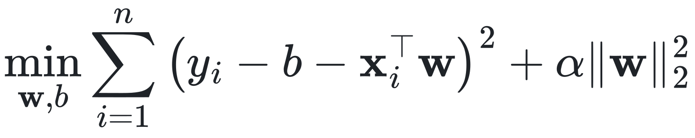
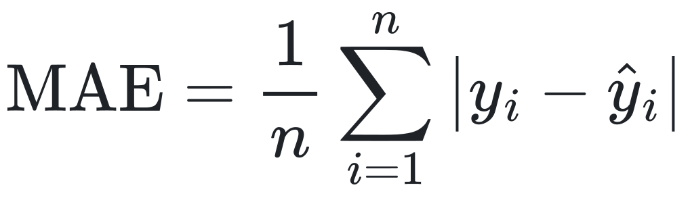
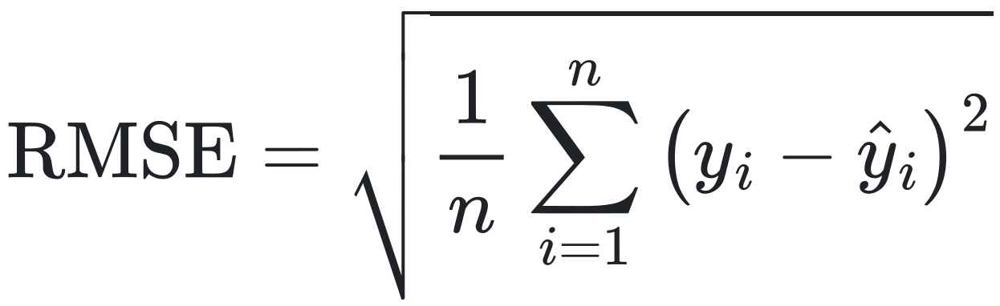

MIDTERM RESEARCH PROPOSAL
Predictive Learning
Department of Computer Science and Information Engineering
National Taiwan Normal University
October 27, 2026
Group Members: [Member A] · [Member B] · [Member C] · [Member D]
Weather is a recognized driver of bike-sharing use, but a forecast can only use weather that is already known.
Demand depends on weather
Cold, rain and high humidity are associated with fewer and shorter bikeshare trips (Gebhart & Noland, 2014). Weather and temporal factors recur across the bike-sharing literature (Eren & Uz, 2020).
Seoul hourly data is public
The Seoul Bike Sharing Demand data pairs hourly rental counts with weather and calendar fields, and has been used for weather-based demand prediction (Sathishkumar & Cho, 2020).
Evaluation must match use
Hourly forecasts are made at a forecast origin and applied to later months. Which weather is available, and how flexible the model is, should be judged out of time.
Scope: system-wide hourly rental counts only; no station, return-flow or inventory data, so no rebalancing claims.
Which information is available at the forecast origin, and how complex should the model be?
P1 Information availability
Is previous-hour observed weather useful? How much does target-hour actual weather change the picture?
P2 Model complexity
How do regularization and flexibility affect generalization from winter–spring training to later months?
P3 Attribution and errors
What do demand history, time, calendar and weather each add, and when do forecasts fail?
| Study | Setting | What it contributes |
|---|---|---|
| Eren & Uz (2020) | Review of station-based bike-sharing research | Organizes factors behind demand: weather, built environment, public transport, socio-demographics, temporal and safety factors. |
| Sathishkumar & Cho (2020) | Seoul hourly rentals with weather data | Weather-based, rule-based model for Seoul bike demand prediction; this line of work uses the Seoul Bike dataset adopted here. |
| Xin (2026) | Seoul and Washington, DC; one-hour-ahead | Probabilistic forecasting with Transformer-based and other models; reports point error and 80% interval coverage. |
Prior work links weather to demand and forecasts Seoul hourly demand with learned models.
Sources: see References (slide 14). Descriptions summarize each work’s stated scope.
Weather evidence
Predictive models: Xin (2026), Seoul, one hour ahead
| Model | MAE (rentals/h) | 80% coverage |
|---|---|---|
| N-BEATS | 115.07 | 75.42% |
| Random Forest | 115.86 | 89.26% |
| TFT | 306.98 | 81.11% |
| Transformer | 317.72 | 74.01% |
Reported by Xin (2026), Table 2 (p. 6). Not our results and not directly comparable to ours.
Lowest point error does not imply the best interval coverage.
Open point: the literature does not specify, field by field, which weather values exist at the forecast origin of a one-hour-ahead forecast.
| Insufficiently clarified question | What prior work leaves open | Our contribution |
|---|---|---|
| Information timing | Xin (2026) describes target-time covariates; availability of each field at the forecast origin is not fully specified (not an allegation of leakage). | Explicit E1 / E2 / E3 information settings under one protocol |
| Complexity control | Models from different families are compared; controlled complexity curves are not the focus. | Ridge α, KNN k and tree-depth curves with train vs. validation error (X2, X3) |
| Information value | Which input group matters, and where errors concentrate, is not isolated. | Group ablation and temporal error slices (X4, X5) |
Shared with Xin (2026): date boundaries of the chronological split. Different: five weather variables and three demand lags, a 168-hour warm-up, and the definition of eligible samples.
Not claimed: the first weather study, any leakage in prior work, or superiority over probabilistic methods.
Aim: separate the value of available weather information from retrospective information, and study model complexity under out-of-time evaluation.
| Research question | Objective | Falsifiable hypothesis | Analyses | |
|---|---|---|---|---|
| RQ1 | Does previous-hour observed weather improve next-hour forecasts, and how does target-hour actual weather differ? | Quantify E1 vs. E2 vs. E3 | E2 may beat E1; E3 may help precipitation hours but is not guaranteed to beat E2. | X1, X4, X5 |
| RQ2 | How do model complexity and regularization affect out-of-time generalization? | Map train vs. validation error | Moderate regularization may help; complex models need not win. | X1, X2, X3 |
| RQ3 | What do demand, time, calendar and weather contribute, and where do models fail? | Attribute value and locate errors | Demand history may add most; peak hours may have larger absolute error. | X4, X5 |
8,760hourly observations, 14 columns
8,297eligible samples
4,152training
720validation
3,425test
1 Align timestamps
Date + Hour become a unique hourly timestamp (Seoul local time); no gaps, no missing cells.
2 Build lags first
lag_1, lag_24 and lag_168 are shifted on the full hourly axis; non-functioning hours stay as observed history.
3 Select eligible rows
Score only Functioning Day = Yes targets with all lags available: 8,465 operating hours, 8,297 after warm-up.
4 Fit on train only
StandardScaler and encoders are fitted on training rows, then applied to validation and test.
Leakage control: chronological split, past-only lags, no target-hour demand input.
Source: Kaggle, Seoul Bike Sharing Demand Prediction (SeoulBikeData.csv); file checksum identical to the UCI release. Bar length proportional to calendar days.
| Group | Columns | Encoding | Dim. |
|---|---|---|---|
| H Historical demand | lag_1, lag_24, lag_168 |
StandardScaler | 3 |
| T Time | Hour and Weekday of the target hour | sin / cos pairs | 4 |
| C Calendar | Season (4 levels), Holiday (2 levels) | One-hot | 6 |
| W Weather | Temperature, Humidity, Wind speed, Rainfall, Snowfall | StandardScaler | 5 |
E1 = H + T + C. E2 adds the previous-hour weather; E3 replaces it with target-hour weather. E3 is a retrospective oracle, is not deployable, and need not beat E2. Target-hour demand is never an input.
| Analysis | Models | E1 | E2 | E3 | Varied or controlled |
|---|---|---|---|---|---|
| X1 Model comparison | Ridge, KNN, Random Forest, 3 naive | ● | ● | ● | Model × information setting |
| X2 Ridge regularization | Ridge | ○ | ● | ○ | Penalty α |
| X3 Complexity control | KNN, Decision Tree | – | ● | – | k; max_depth |
| X4 Weather and ablation | Ridge, Random Forest | ● | ● | ● | Setting; removed group |
| X5 Temporal error analysis | Best E2 model by validation | ○ | ● | ○ | Hour, month, day type, rain |
X1–X5 are analyses crossed with E1–E3, not eight experiments. ● main · ○ supplementary · – not used
X1 · Model comparison
X2 · Ridge regularization
X3 · Complexity control
X2 Ridge objective

X4 · Weather information and feature ablation
4a E1 vs. E2 vs. E3. Ridge and Random Forest on identical samples.
4b Group ablation on E2. Hyperparameters fixed from Full E2; same samples.
| Variant | Removed columns |
|---|---|
| Full E2 | none (reference) |
| − H | lag_1, lag_24, lag_168 |
| − T | hour and weekday sin / cos |
| − C | season and holiday |
| − W | 5 weather columns (= E1) |
X5 · Temporal error analysis
Pre-specified slices of the test period, for the best E2 model by validation MAE:
| Slice | Definition |
|---|---|
| Hour | MAE for each target hour 0–23; night 00–05, peaks 07–09 and 17–19 |
| Month | July to November 2018 |
| Day type | Weekday vs. weekend; holiday flag |
| Precipitation | Rainfall > 0 or Snowfall > 0 vs. none (scoring label only) |
| Curve | Actual vs. predicted, 2018-07-01 to 2018-07-07 (fixed in advance) |
Each slice reports n, mean rentals, MAE, RMSE and signed error.
Ablation is not a causal intervention.
Evaluation metrics


Model selection and leakage control
Project timeline
Resources and budget
Python, pandas, scikit-learn (Pedregosa et al., 2011), matplotlib on laptop CPUs. No additional budget.
Collaboration
A: data and pipeline. B: Ridge, KNN (X2, X3). C: Random Forest (X1, X4). D: X5, integration, LSTM extension.
Ethics and confidentiality
Public aggregated hourly data; no human subjects, personal data or animal experiments. No ethics review is claimed.
Planned analyses and deliverables
Research limitations
Figures shown in the final report will come from executed experiments; none are claimed here.
Contribution: a reproducible protocol separating available from retrospective weather information, with complexity and error analysis.